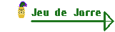
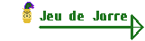

Programme code en Python avec l'API discord.py sur Pycharm
Petit Match de Ping-Pong
Le bot discord est en capacite de lire tous les messages
dans le serveur
a la suite, il est possible de le faire reagir
a certaine phrase
en exemple ici, a chaque message contenant
le mot "ping" il repondra "pong"
il peut facilement etre un
bot de moderation
A Votre Service !
Il est possible de demander a un bot discord d'effectuer des
actions.
Pour cela il faut ecrire le prefixe du bot (ici "Kyla.")
et l'action demandee Il est donc possible de faire de nombreuses
choses, comme demande les regles d'un serveur ou des instructions
plus precise sur le theme du serveur. On peut aussi reserver les
commandes a certaines personnes en fonction de leur roles, il est
donc possible de faire un systeme d'avertissement, pas disponible
sans bot, en utilisant une commande qui donnera un avertissement
quand on donne son identifiant, alors l'identifiant sera stocke
avec son nombre d'avertissement dans un dictionnaire et renvoyer
au bout du 3eme.
Recevez ma Bénédiction
Il est aussi possible de faire en sorte qu'un bot discord
attribue des roles au utilisateur comme tout moderateur,
pour optimiser cela, il est possible qu'un bot lise toutes
les reactions mises sur un message en particulier et d'ajouter
un role en fonction de la reaction ajoutee et si enlever alors
d'enlever le role a la suite de quoi, on peut aussi avertir
l'utilisateur en lui envoyant un message prive avec le bot.
Conclusion
C'est un programme que j'ai cree a la fin des grandes vacances de 2021, c'est un programme que j'ai eu envie de faire pour un serveur personnalise. pour la realisation de ce programme, j'ai du apprendre a utiliser une API (discord.py) et suivre la documentation en ligne pas a pas, cela fut tres enrichissant et utile.

 
